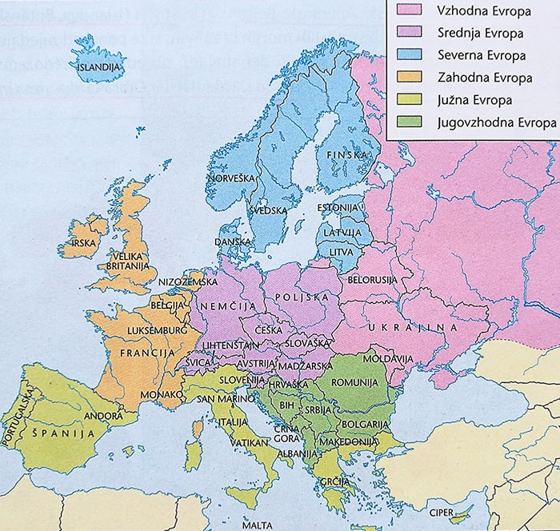
Evropa: države, glavna mesta
Pregledna karta Evrope z državami in glavnimi mesti.
Tukaj so samo zemljevidi in grafične karte, ki so najbolj uporabni za test. Klikni na katero koli karto, da jo odpreš v večjem formatu.
Tukaj so samo zemljevidi in grafične karte, ki so najbolj uporabni za test. Pri vsaki je napisano, kaj moraš znati pokazati ali razložiti.

Pregledna karta Evrope z državami in glavnimi mesti.
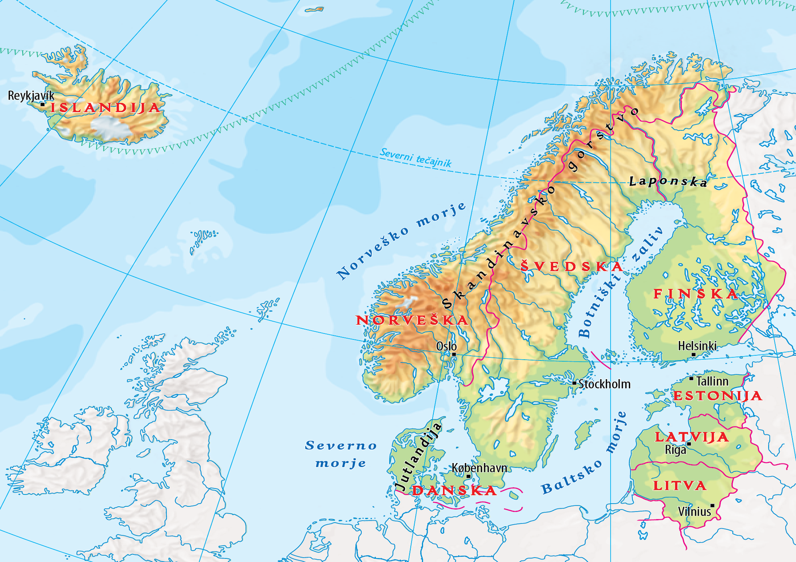
Pregledna karta Severne Evrope z državami, glavnimi mesti, morji, otoki in naravnimi enotami.
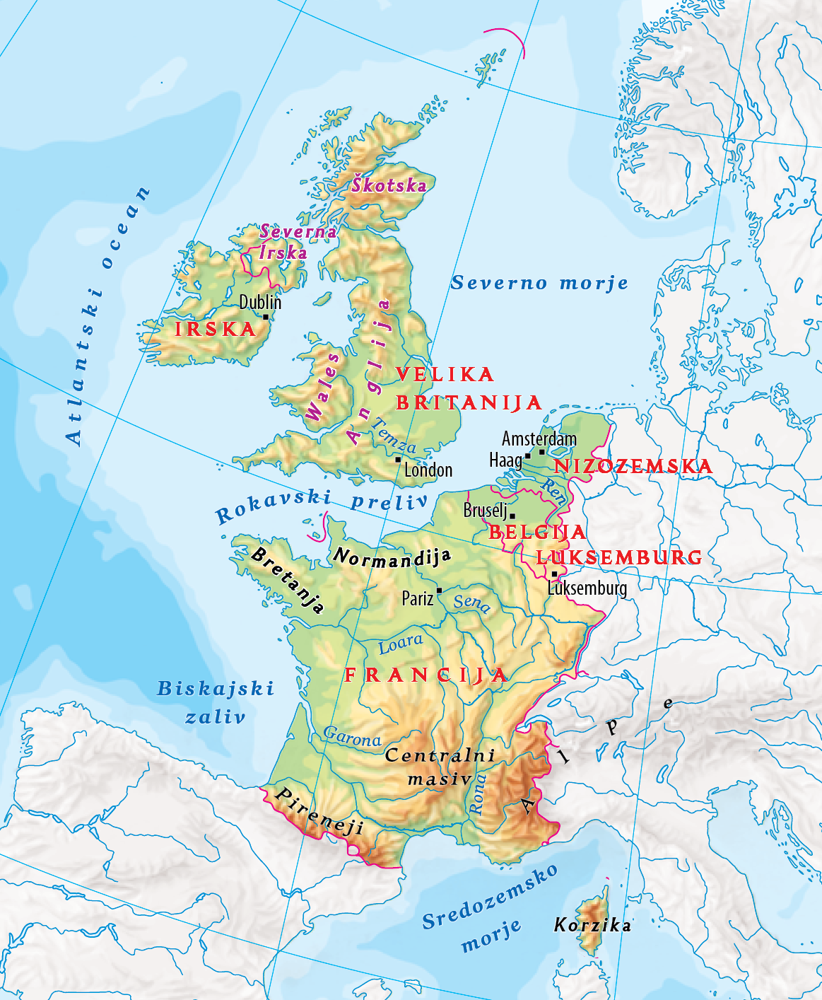
Pregledna karta Zahodne Evrope z državami, glavnimi mesti, rekami, morji, prelivi in naravnimi enotami.

Na nemi karti moraš znati pokazati polotoke, gorovja, otoke, Padsko nižino in morja.
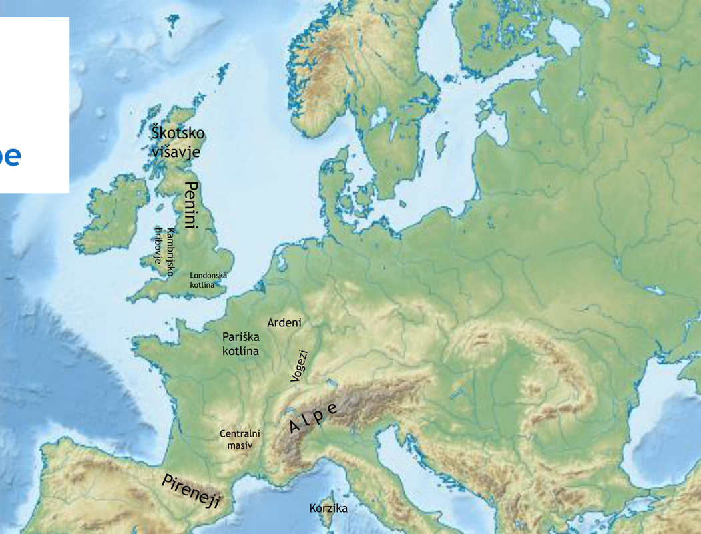
Pomembno: Škotsko višavje, Penini, Kambrijsko hribovje, Pariška in Londonska kotlina, Ardeni, Centralni masiv, Alpe, Pireneji.
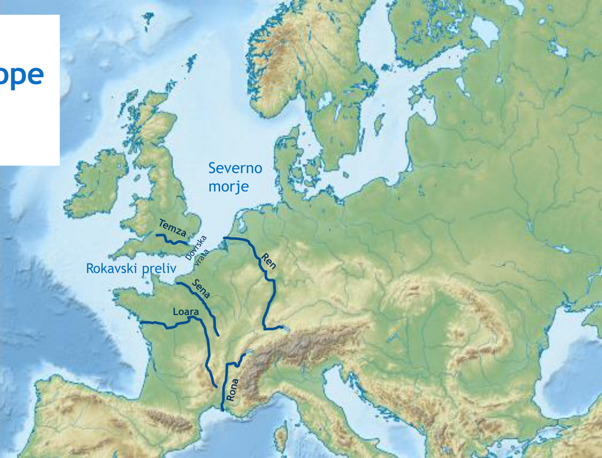
Reke: Temza, Ren, Loara, Sena, Rona; morje: Severno morje; prelivi: Rokavski preliv, Dovrska vrata.
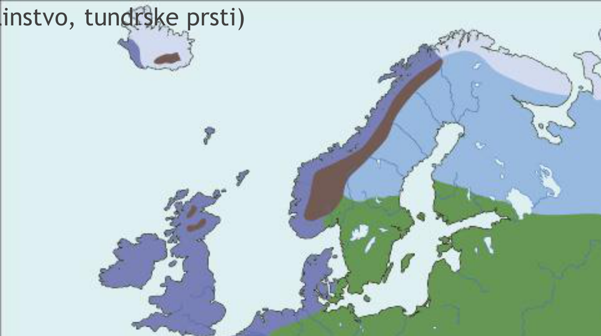
Poveži podnebje z rastlinstvom in prstmi: oceansko, kontinentalno vlažno, zmerno hladno, gorsko, tundrsko.
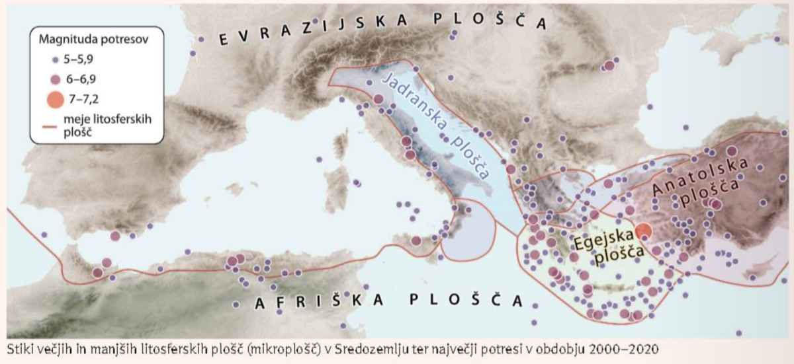
Poveži potrese in aktivne vulkane s stikom Afriške in Evrazijske plošče.
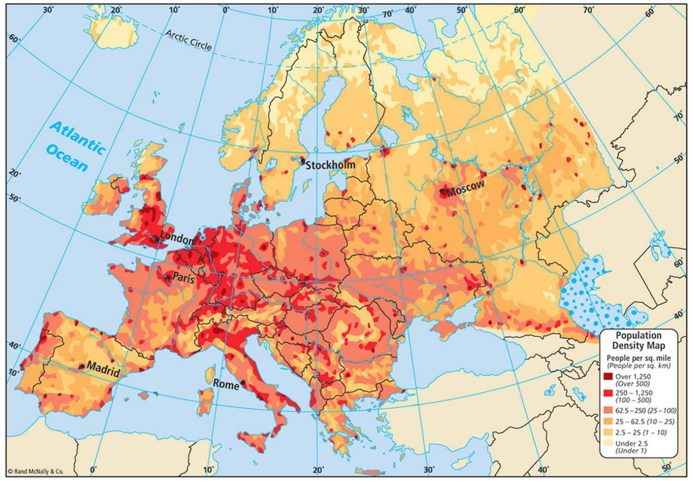
Prepoznaj gostejša območja in razloži dejavnike poselitve.
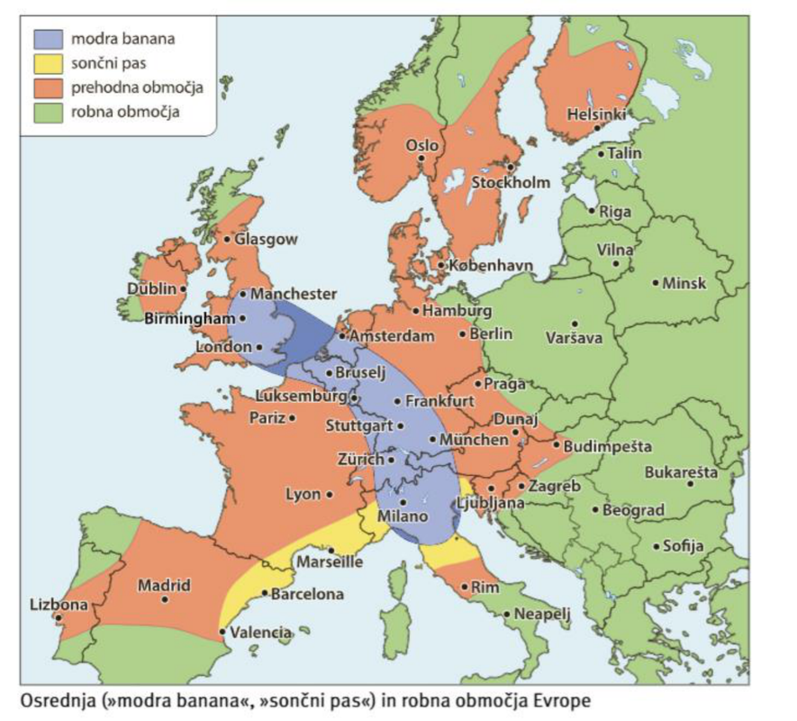
Modra banana in sončni pas sta ključna za vprašanja o regionalnih razlikah.
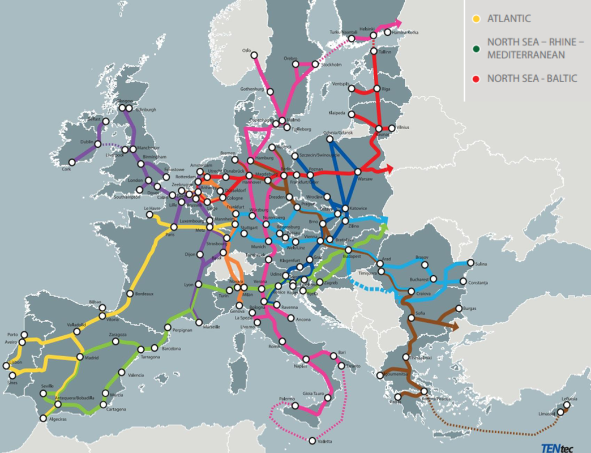
Pomembno za razumevanje evropskih prometnih tokov in povezovanja.
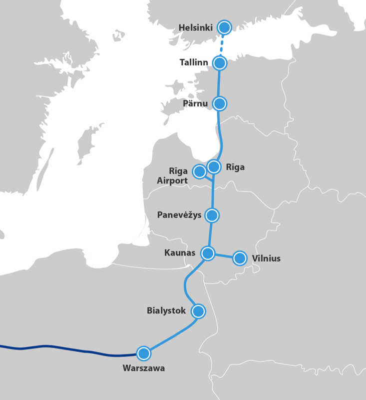
Projekt povezovanja pribaltskih držav s Poljsko in evropskim železniškim sistemom.
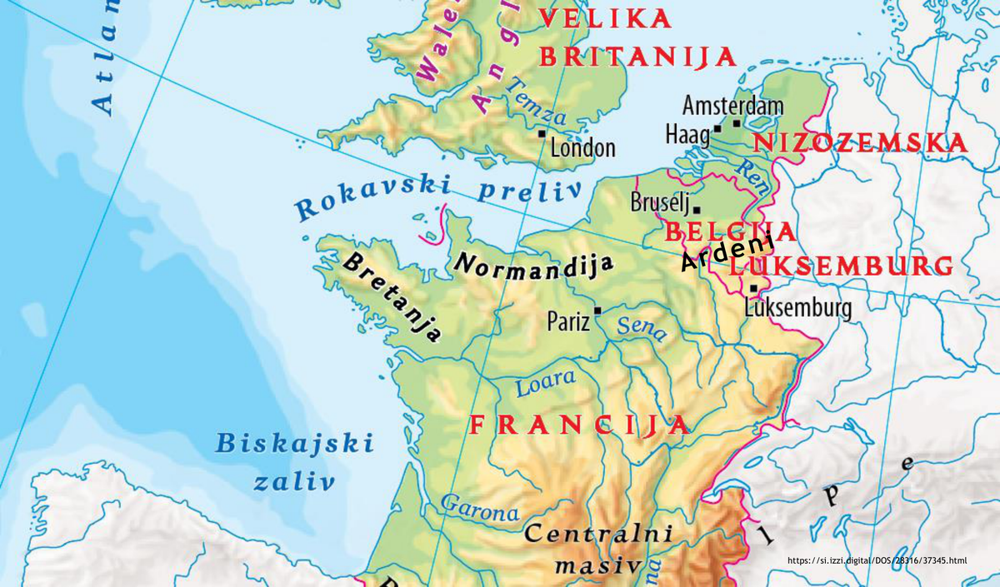
Na zemljevidu poišči Belgijo, Nizozemsko, Luksemburg, Bruselj, Amsterdam, Haag, Rotterdam in Severno morje.
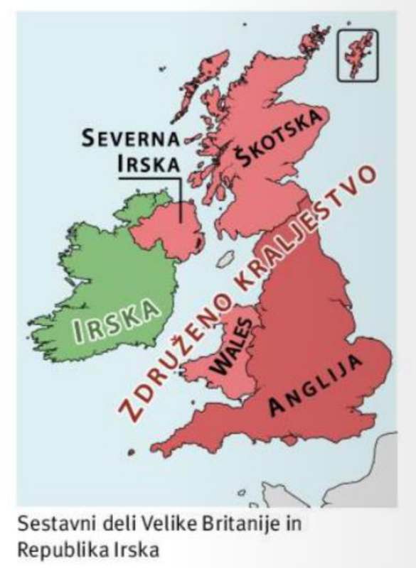
Loči Britansko otočje, Veliko Britanijo, Združeno kraljestvo, Irsko in Severno Irsko.